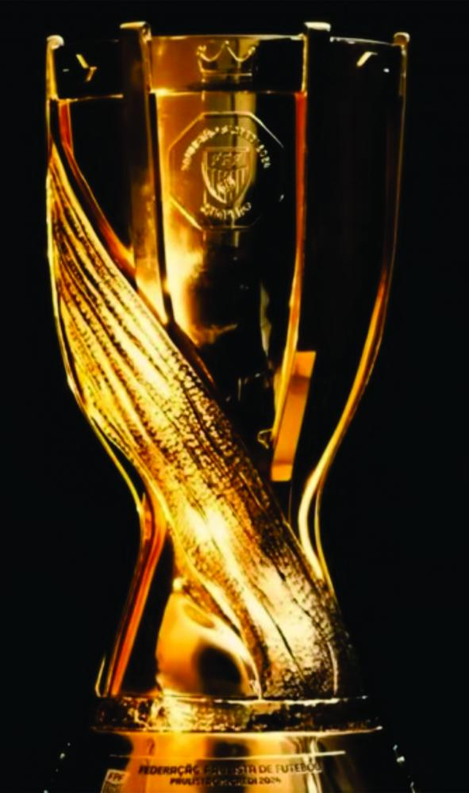
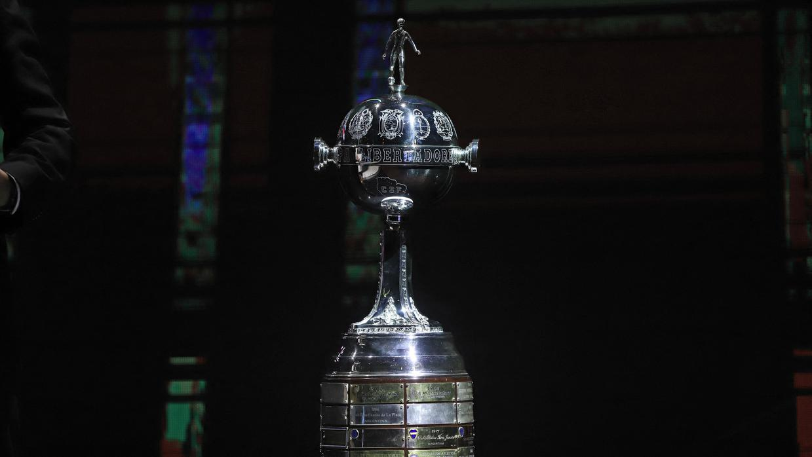
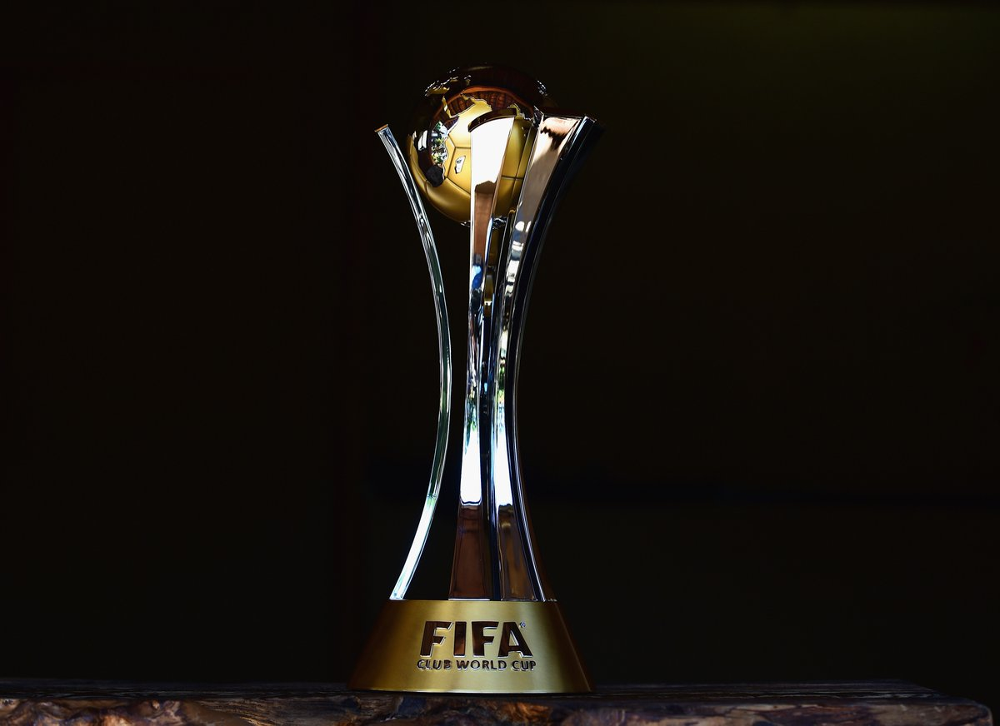
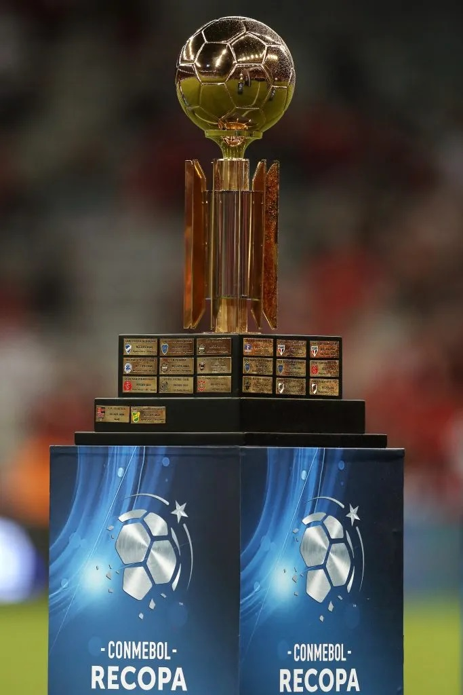

Troféus do Corinthians

Campeonato Paulista
O Campeonato Paulista é um dos torneios mais tradicionais do Brasil. O Corinthians é um dos clubes mais vitoriosos, conquistando este troféu em diversas edições.

Campeonato Brasileiro
O Campeonato Brasileiro é a principal competição nacional. O Corinthians venceu este torneio várias vezes, incluindo as edições de 1990, 1998, 1999 e 2015.

Copa Libertadores
A Copa Libertadores é o torneio mais prestigioso da América do Sul. O Corinthians venceu em 2012, conquistando seu primeiro título no torneio.

Copa do Mundo de Clubes
A Copa do Mundo de Clubes da FIFA reúne os campeões continentais. O Corinthians venceu em 2000 e 2012, destacando-se no cenário mundial.

Recopa Sul-Americana
A Recopa Sul-Americana é um torneio que enfrenta os campeões da Libertadores e da Sul-Americana. O Corinthians conquistou a Recopa em 2013.